Basic design goals
The FreeType auto-hinter will be designed in order provide the following
features:
absolutely patent-free from day 1 !!
capable of hinting monochrome and anti-aliased glyphs
differently, in order to generate high-quality images matched to
the target device.
capable of real-time hinting of outlines, in order to be used
with any FreeType 2 font driver ( TrueType, Type 1, CFF/Type 2,
etc..) that doesn't provide its own hinting algorithm.
we'll try to make the auto-hinter as independent as the rest of
FreeType 2, in order to make it usable in other projects.
well, as usual with FreeType code, expect small footprint, code
size and excellent performance ;-)
Development
The FreeType Auto-Hinter is developed by David Turner, lead FreeType
architect and developer, under contract with an unnamed company. Among
other things, the following have been agreed when signing the contract:
The auto-hinter will be released under an open source license similar
to the FreeType one (with copyrights reverted to the Company). Hence,
it will be included in FreeType 2 when the latter is released.
The source code for the auto-hinter will be kept confidential until
the contract delivery date, set to the end of May 2000. However,
its algorithms will be freely and publicly discussed and detailed
in a dedicated mailing list. Screen shots of the on-going work will
be posted on web pages too.
Other than the legal stuff, the general approach is extremely practical,
and features will be introduced progressively in the auto-hinting engine
to enhance its quality and performance. Do not expect beautiful results
immediately then :-)
Of course, the engine will be tested against a large number of fonts.
However, it will first focus on correctly hinting widely available
high-quality fonts (Arial, Times, Helvetica, Palatino, Courier, etc..)
for Latin scripts. Managin ideographs will be added later as these will
much probably require some specific settings.
Current Status
The auto-hinter is now described through several web pages. Please follow
the links below for more information:
ScreenShots
Here are some screenshots taken on Monday 3 April 2000 with the current
auto-hinting module. You can find also find old screenshots on the
archives page. Note that :
Glyph metrics are still not hinted in this version, so do
not be surprised if you see some strange inter-character spacing.
Composite glyphs (i.e. mainly accented characters) are also not
hinted correctly as they will be in a near future.
Diagonals are not hinted for now, so don't be surprised to see the
same "colorful" letters as with TrueDoc.
The anti-aliased images correspond to the same grid-fitted outlines than
the monochrome ones. For now, we do not explicitely support anti-aliased
hinting, even though this should not prove to be really hard..
The anti-aliased images are rendered through Beta FreeType 2's default
renderer which supports 128 levels of grays (this will go as high as
256 for the release, but shouldn't make a difference to the human
eye..).
The following problems have been fixed compared to the latest version:
Courier, and ohter fonts with very thin stems were not handled
properly. This is now fixed.
Blue zone computation and alignment have been improved (though it
doesn't show on the screenshots).
Points located between edges are now much better interpolated,
resulting in slightly higher quality. Actually, the difference
is more visible with decorative fonts that are not shown there..
Type 1 outlines are now supported. The current results are equivalent
to the FreeType 2 Type 1 hinter :-) By the way, the latter was
recently updated with improvements that came from this research.
Images dated 2000-03-02
Arial
Unhinted monochrome outlines

Hinted monochrome outlines
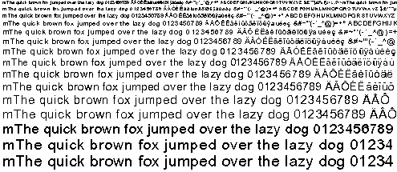
Hinted anti-aliased outlines
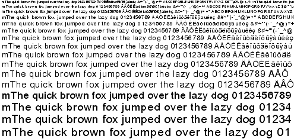
Arial Italic
Unhinted monochrome outlines
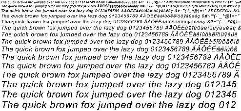
Hinted monochrome outlines
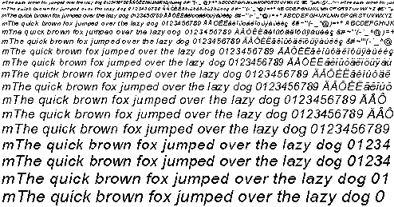
Hinted anti-aliased outlines
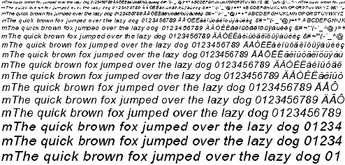
Times New Roman
Unhinted monochrome outlines
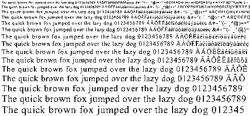
Hinted monochrome outlines
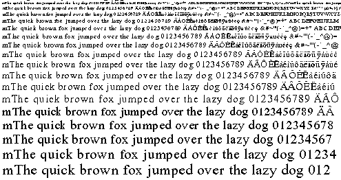
Hinted anti-aliased outlines
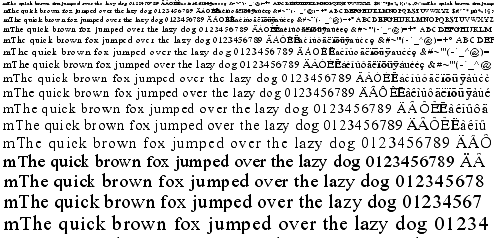
Times New Roman Italic
Unhinted monochrome outlines
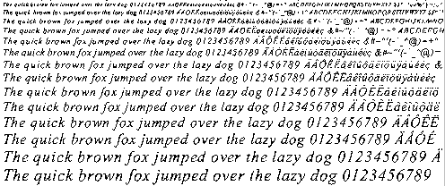
Hinted monochrome outlines
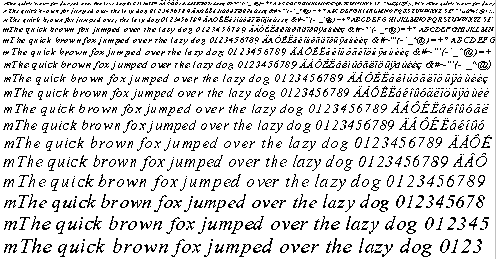
Hinted anti-aliased outlines
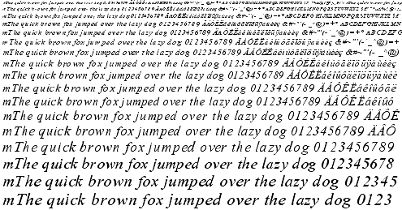
Courier New
Unhinted monochrome outlines
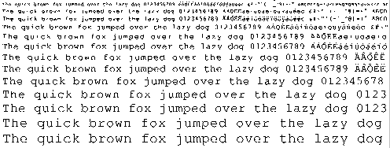
Hinted monochrome outlines

Hinted anti-aliased outlines
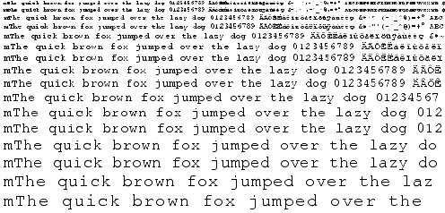
Courier New Italic
Unhinted monochrome outlines
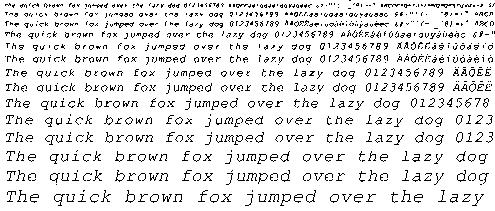
Hinted monochrome outlines
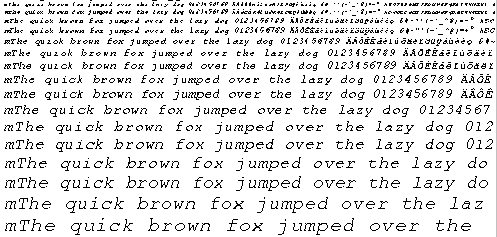
Hinted anti-aliased outlines
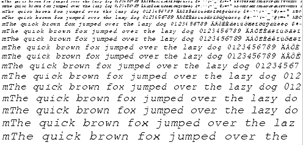
Things TO DO !!
Well, for now:
Implement composite glyph hinting correctly. FreeType 2 has been
updated to implement the FT_LOAD_NO_RECURSE flag which is crucial
to load composite glyphs as separate elements, and I'm currently
experimenting to incorporate this in the auto-hinter.
Introduce extra edges for the left-most and right-most extrema
in a font (when those are not covered already by an edge). This
seems to be important for many things, including diagonals !!
Well, I've just been too lazy for now..
Implement anti-aliased hinting (should be easy and give good
results)
Test with asian fonts, and try to devise an algorithm to improve
their rendering (apparently, equal spacing of white distances is
much more important than correct positioning of black ones..).
Implement outline distortion measurement and optimisation as described
above.
|